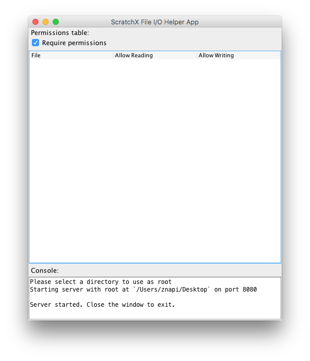

A Scratch extension for reading, writing, and creating files.
This Scratch extension requires a helper application in order to access your file system.
Extension
Helper App
Download
Java required
Security notice: By default, the helper app requires you to specify per file permissions so that you can use it safely. Disabling the permissions requirement, however, gives free access to your filesystem. Do not disable the permissions requirement unless you trust the project(s) you are using. Though, personally, I doubt you'll encounter malicious ScratchX projects, I must warn that neither I nor the Scratch Team are responsible for any damage to your computer that your use of the helper app causes.
Basic Use
- Load the extension using the link in the left-most grey box above, or follow this ScratchX link. The status "light" of the extension should be yellow.
- Download the helper app from the right-most grey box above.
- Run the helper app using Java. On most systems you can just double click on its icon on your desktop or in a file browser.
- A window should open, and the helper app will ask for you to choose a "root directory". The root directory will be the extension's entry point to your file system. For example, if you set it to C:\path\to\a\directory, then the Scratch block "read file [example.txt]" will read the file at C:\path\to\a\directory\example.txt. You may want to create a new, empty directory and make that the root rather than choosing an existing directory.
- After choosing a directory, the window should look something like this:

Go back to the window containing ScratchX, and, within 5 seconds, the status light of the extension should change to green, meaning that the extension is ready. You can now use the extension blocks in ScratchX. - When you are done using the extension, close the helper app.
Troubleshooting
Couldn't start server: java.net.BindException: Address already in use: Another application on your computer already has a socket bound to port 8080. You will have to stop that application or change the port number it uses in order to use this helper app. The port number of this helper app cannot be changed.
Blocks
| Returns the contents of the specified file. Note that this includes any newline characters, including leading and trailing newlines. | |
| Overwrites the specified file with the given contents. Note that it does not automatically append a newline to the end. | |
| Appends to the specified file with the given contents. Note that this block also automatically appends a trailing newline after the given contents are appended, but not before. | |
| Reports the newline character. |
Usage from the Command Line
Two modes of operation
The helper app has two different operation modes: GUI mode and console mode. In GUI mode, the app creates its own window, and provides the option to require you to specify individual file permissions. In console mode, the app does not create any windows, and, instead, writes log messages to the console (or wherever stdout is pointing to). The helper app does not provide any means to specify file permissions in console mode. Also, The permissions requirement cannot be enabled in console mode.
If the helper app is launched from a console, by default it will run in console mode. Otherwise, it will run in GUI mode.
Arguments
The helper app takes three command line arguments. The order of the arguments does not matter. The helper app will fail to launch and provide helpful error messages if incorrect options are specified.
| Path to root directory: | Just a path to the directory to use as root. It looks like C:\path\to\root. It is required in console mode. |
| -gui: | This argument forces the app to run in GUI mode, whether there is a console present already or not. |
| -nosecurity: | This argument requires the `-gui` argument to also be specified. This argument will launch the helper app with the permissions requirement disabled, though it can be reenabled through the GUI. |
Example: java -jar file-io-helper-app.jar /path/to/root/directory -gui
Why the Helper App
Scratch extensions (and JavaScript in web pages in general) cannot access files on your computer for good security reasons. To get around it, a helper app that does have access to your files is necessary. The extension works with the helper app to read and write files.